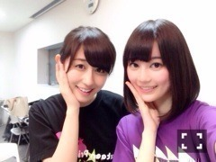

| 2014/05 30 Fri | 初日。(´>∀<｀)ゝ |
ちはるーむへようこそ(｡-_-｡)♡

久しぶりのブログでごめんなさい(°_°)
私は今日まで、学校の中間テストに追われており
頑張ってました！！！
そして、今日、やっと、
テストから解放されました٩꒰⍢ ꒱۶⁼³₌₃
つかれたつかれた(°_°)
朝の5時前まで勉強がんばってたよヽ(；；)丿
そしてプリンシパルも始まりました！！
今日は初日です。
今日はロザリオ役に立候補。
生駒との一騎打ちで、辛いものがあったのですが
なんとなんと、
初日、二幕で選んでいただけましたヽ(；；)丿ヽ(；；)丿
本当にありがとうございますヽ(；；)丿ヽ(；；)丿
初日に選ばれるなんて思ってもみなかったから
すごく嬉しかったヽ(；；)丿
そしてすごく楽しかったヽ(；；)丿

主人公、ポリン姫役を演じたいくちゃんと♡
二幕終わったあとの充実感たっぷりの笑顔です☻☻
嬉しかったし、楽しかったけど
なんだかまだまだ出来る気がする！！！
課題をたくさん見つけた！！！
もっと笑いに磨きをかけて
自分自身も成長していきたい。
頑張らねば。
インタビューで生駒が
コメディーということで、斎藤ちはるちゃんがオススメと言ってくれたみたいで
ヽ(；；)丿
もっともっと頑張らねば。！！
とりあえず、今日はこの喜びと、テストからの解放を伝えたかったから
ブログ更新できてよかった(｡-_-｡)
よし、プリンシパル期間中も、
みなさんのコメントからパワーもらおうっと。
プリンシパル頑張ります！！！
ばいるんっ
るんるんっ
ちはるんっ
(´>∀<｀)ゝ
コメント(587)
2014/05/30 23:42